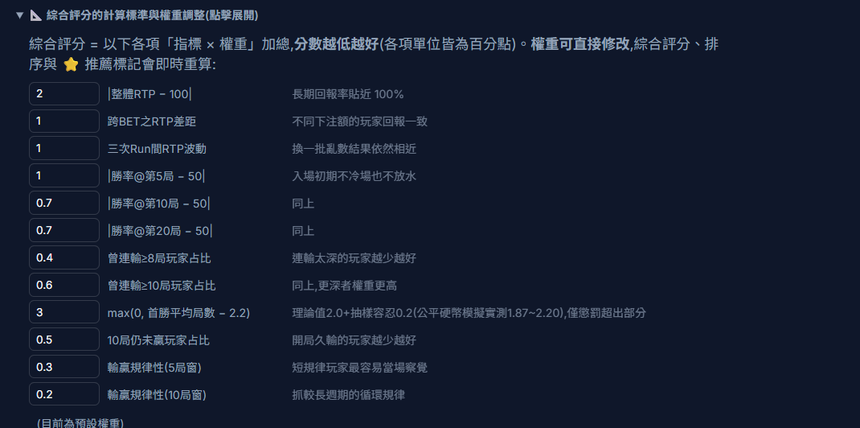

本職之外 ｜ 決策依據
公司要在多套派彩決策系統裡挑一套，每一套的提出者都說自己的好，沒有人能判斷。我把七套系統蓋掉名字、只留代號，跑出 882 份模擬報表，做兩個網頁讓決策者自己比——包括一個可以改權重的評分工具。我自己不下結論。
派彩決策的做法有很多種，公司內部同時有七套方案在檯面上。每一套的提出者都能講出自己的優點，但彼此的說法沒有共同的比較基礎：有人講回報率、有人講玩家體感、有人講獎池穩定度，各說各話。
更麻煩的是，只要大家知道哪一套是誰提的、哪一套是「公司原本想用的」，比較就不再是比較。要讓結論站得住腳，得先把人的因素拿掉。
七套系統只以代號 B 到 H 呈現，閱讀指南裡不說明任何一套的內部機制，也不做推薦。參加評選的人看到的只有行為與數據。
七套裡有一套是純隨機，當對照組。它的代號跟其他六套混在一起，沒有人知道哪一個是它——如果某套系統的表現跟純隨機分不出差別，那它多做的那些事就沒有意義。
評比不是交一份報告，是交一套可以自己操作的工具。四個頁面各自回答不同的問題：
| 頁面 | 回答什麼 | 裡面有什麼 |
|---|---|---|
| 閱讀指南 | 該怎麼看、怎麼比 | 資料來源與規模、評分公式與每一項的意義、兩個工具的操作說明；開宗明義寫「本文件為盲測評比的操作說明，不說明各系統的內部機制，也不做推薦結論」 |
| 參數比對工具 | 哪一組設定比較好 | 147 組參數的統計總表，可依任何欄位排序、跨系統勾選對比、只留建議優先檢視的組合；評分權重可直接改 |
| 儀表板 | 這組設定下玩家經歷了什麼 | 玩家最終回報分布、最大連贏與連輸分布、各注額群組逐局的勝率與回報變化；最後一層可以點進任何一位模擬玩家看他的逐局歷程 |
| 解盲版儀表板 | 剛才比的是哪一套 | 跟儀表板同一個畫面，只有系統按鈕換成真實名稱。評比結束前不打開 |
儀表板還有幾個刻意的設計：三次獨立 Run 可以切換，確認看到的現象在不同亂數下會重現；顯示局數可以只看前 5、10、20 局，用來觀察玩家入場初期的狀態；建議優先檢視的三組參數用琥珀色外框標在按鈕上，而且會跟著你自訂的權重重算。
儀表板打開時隨機載入一套系統與一組參數當起點，所以每個人、每次進去看到的第一個畫面都不同。這是刻意的：避免所有人都從同一套系統開始看，第一印象變成定錨。
每套系統有 21 種參數組合，七套就是 147 組，全部看完不切實際。所以我先用一組公式替每套系統圈出三組「建議優先檢視」的參數，讓人從這三組開始看，再自行延伸。
公式有十二個項目，加總後分數越低越好，單位都換算成百分點：
| 項目 | 權重 | 想避免的事 |
|---|---|---|
| 回報率錨定 | ×2.0 | 長期回報偏離目標 |
| 跨注額公平 | ×1.0 | 大注與小注的玩家回報不一致 |
| 重現穩定 | ×1.0 | 換一批亂數結論就變了 |
| 開局勝率（第 5／10／20 局） | ×1.0／0.7／0.7 | 入場就冷場，或一開始放水 |
| 深連輸（≥8 局／≥10 局） | ×0.4／0.6 | 有玩家被連輸拖太久 |
| 首勝速度 | ×3.0 | 太久沒嘗到第一次贏 |
| 久未開胡 | ×0.5 | 十局還沒贏過的人太多 |
| 輸贏規律性（5 局／10 局窗） | ×0.3／0.2 | 被玩家摸出固定循環 |
首勝速度那一項權重最高，但門檻訂得很小心：理論上勝率五成時平均兩局就該贏一次，我用同樣局數去模擬公平硬幣，實測落在 1.87～2.20 局，所以門檻取上緣 2.2，只懲罰超出的部分。這樣才不會把運氣當成系統的錯。
其他指標都有現成的算法，只有一件事沒有：玩家會不會摸出規律。這件事大家都在講——「這個系統玩久了會被看穿」——但沒有人能給一個數字。
我的做法是看輸贏的「樣態」。把每連續 5 局（或 10 局）的輸贏排列當成一種樣態，例如「贏輸輸贏輸」，用滑動視窗統計所有玩家、所有樣態的出現分布。如果輸贏沒有規律，分布會接近與整體勝率一致的隨機分布；如果系統有固定循環，例如每贏一把就固定連輸兩把，分布就會集中在少數幾種樣態上。
有了這個數字，「會被看穿」就從一句感覺變成可以排序、可以比較的欄位。
整份評比我沒有寫任何一句「我建議選哪一套」。比較少見的是另一件事：評分的權重可以被使用者改掉。

理由很簡單：權重是價值判斷，不是數學事實。我設的權重代表我認為「首勝速度比深連輸更重要」，但決策者可以不同意。與其爭論權重，不如讓對方直接改掉，再看結論會不會變——如果換了權重結論依然一樣，那個結論才是穩的。
這個案子真正的產出不是報表，是一個判斷流程：先把身分蓋掉，再把資料攤開，最後把權重交回去給決策者。七套系統裡勝出兩套，進入第二階段的實戰比較。
我後來把同一套做法用在第二階段：一樣是盲測、一樣附上可自訂的評分、一樣不下結論。差別是第二階段改用真實遊戲的賠率表，讓比較更貼近上線後的狀況。
相關：BingoSlot 逆向生成引擎 ｜ LiveMines ｜ 數值設計的八個階段